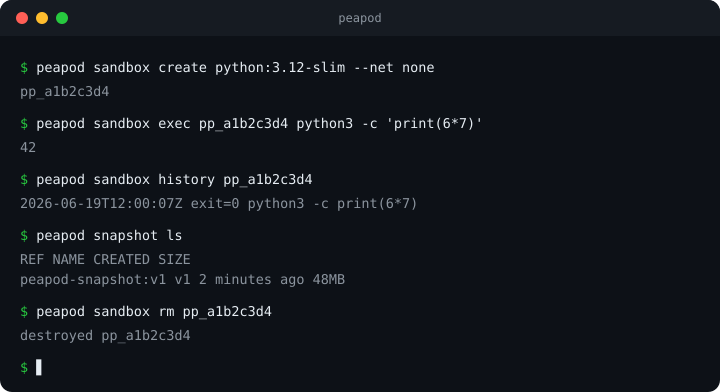

Disposable, isolated sandboxes for AI agents — local-first, on your Mac.

Letting an AI agent run code on your machine is risky — a bug or a bad dependency touches your files, your network, your keys. Peapod wraps every run in a sandbox that's isolated, disposable, has no network by default, and keeps a full audit trail of everything that ran.
Driven over MCP — agents create, run, and destroy sandboxes by themselves (12 tools).
Every command an agent runs is recorded and reviewable.
Egress allowlist proxy — the sandbox reaches only the domains you choose.
Snapshot, fork, prune, and diff a sandbox's filesystem.
Docker/Podman, or one microVM per sandbox via Apple’s container framework.
A SwiftUI macOS app and a local web dashboard, on top of the same engine.
go build -o bin/peapod ./cmd/peapod ID=$(bin/peapod sandbox create python:3.12-slim --net none) bin/peapod sandbox exec "$ID" python3 -c 'print(6*7)' bin/peapod sandbox history "$ID" bin/peapod sandbox rm "$ID" # native app: cd ui-native && ./build.sh # → Peapod.app + Peapod.dmg